The atelier opens.
The real start-up — the four-circle seal, the ticket, four honest loading stages — then six rooms.
The real start-up — the four-circle seal, the ticket, four honest loading stages — then six rooms.
A 210-second scroll film of Cake Studio 10.0.0 Atelier: twelve worlds built from the real app — orders, the photo gate, Arabic typesetting, the measured sheet, 3D design, decor, the catalogue, the lookbook, approvals and the kitchen.
The real start-up — the four-circle seal, the ticket, four honest loading stages — then six rooms.
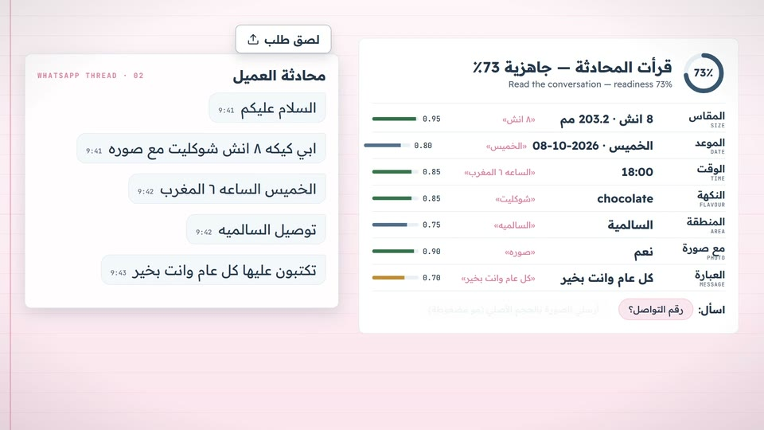
Paste the thread: size, date, time, flavour, area and message come out with their evidence, and the app asks for what is missing.
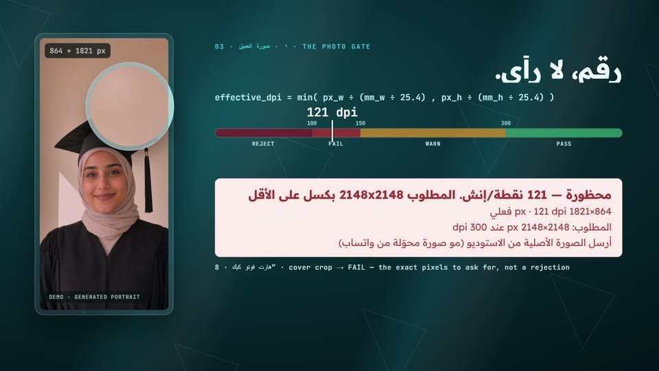
The photo gate measures effective dpi at the printed size, names the exact pixels to ask for, and finds a placement that fits.
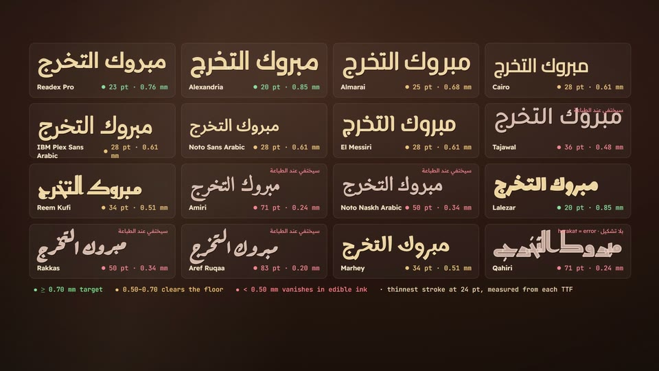
Sixteen shipped faces typeset as outlines, each with the smallest size that keeps a 0.7 mm stroke in edible ink.
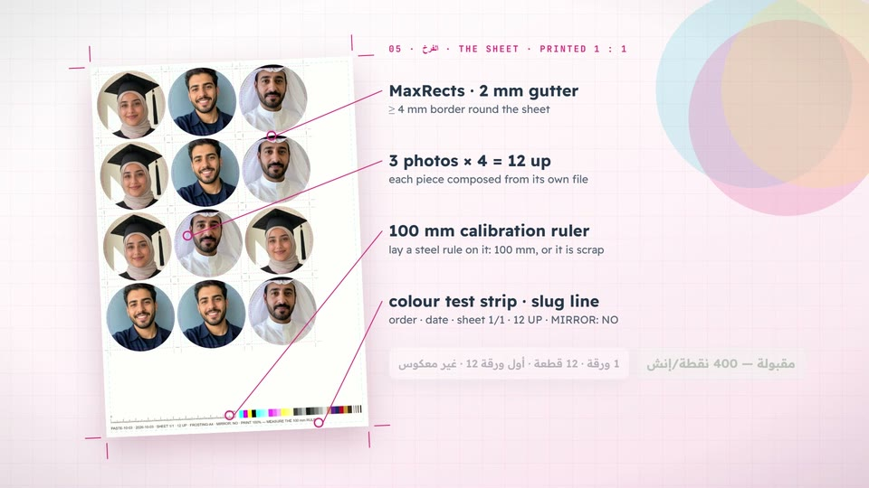
One measured sheet: nested pieces, crop marks, a 100 mm ruler, and a PDF that refuses anything but 1:1.
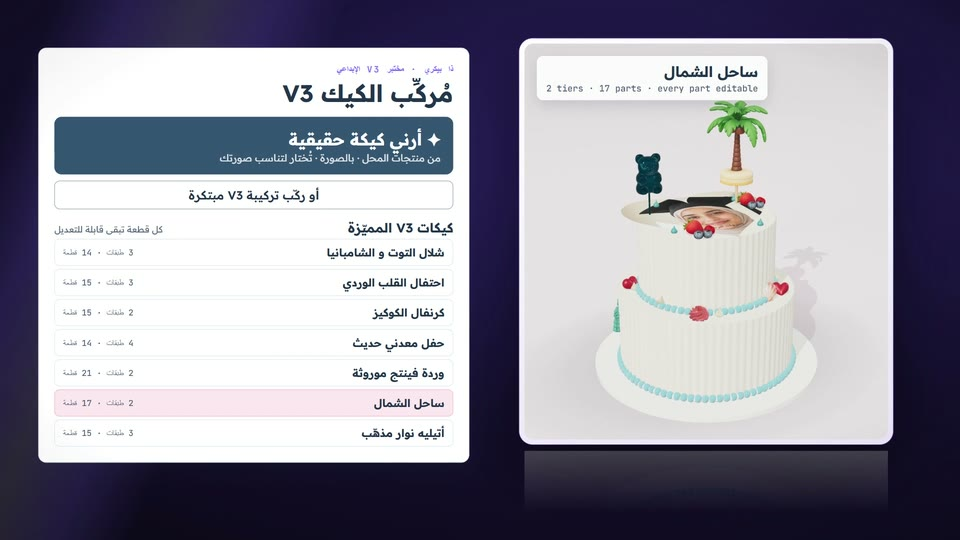
Composer V3 builds real shop cakes with the customer's photo already on them, every part editable, weights and servings live.
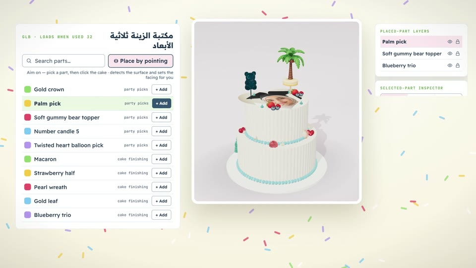
A 32-part 3D library: point at the cake and the app says exactly where the part will sit.
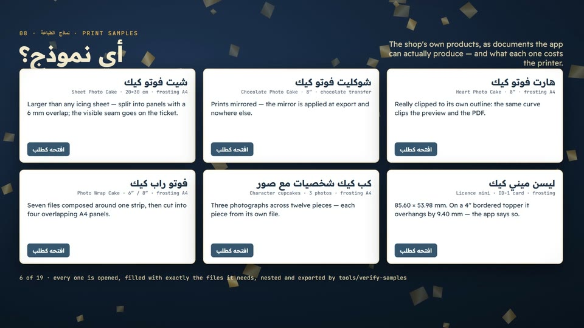
Nineteen real products as ready documents, and one-click templates ranked by how well the photo fits.
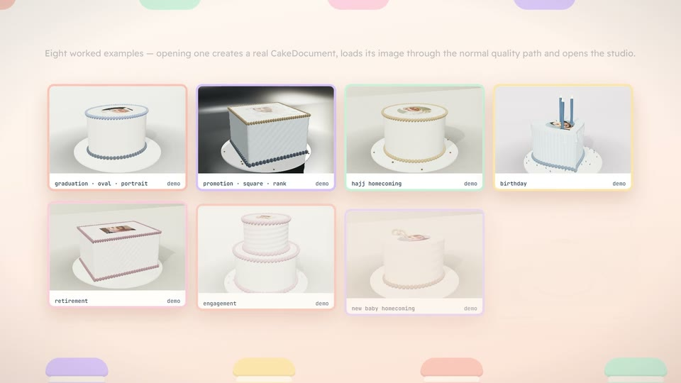
Type the customer's brief; eight worked examples narrow down and open as real documents.
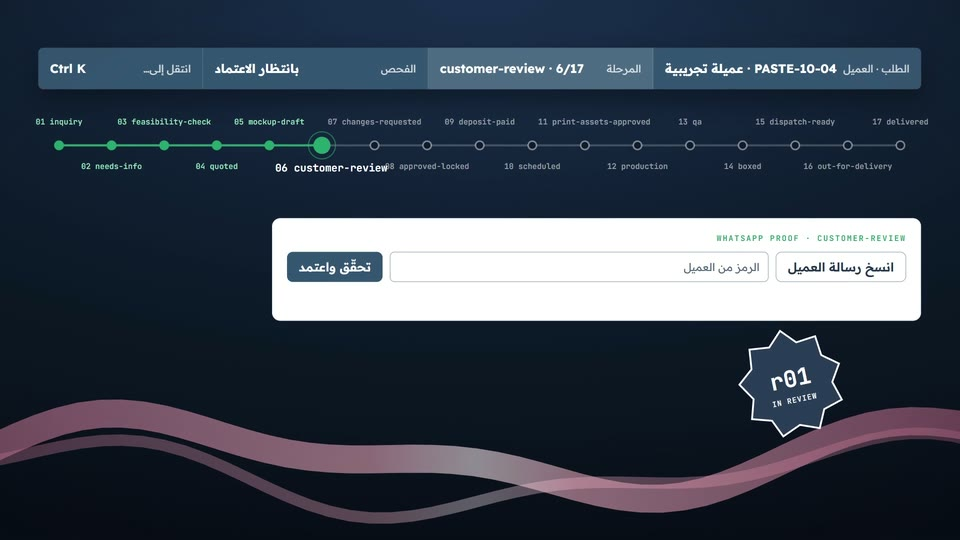
Seventeen stages from inquiry to delivery; a revision freezes every file and render, and any later edit reopens approval.
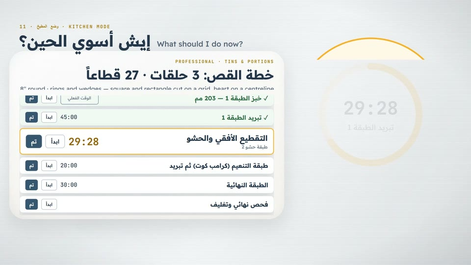
Kitchen Mode runs one step at a time with real rests and timers, then the cut plan for the tin.
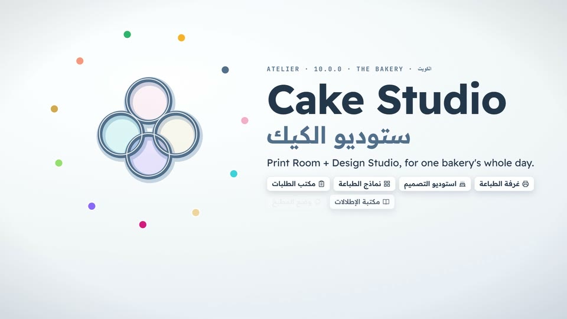
Print Room and Design Studio for one bakery — Arabic and English, light and dark, desktop and phone.